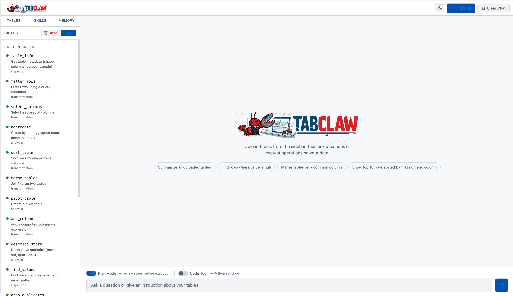
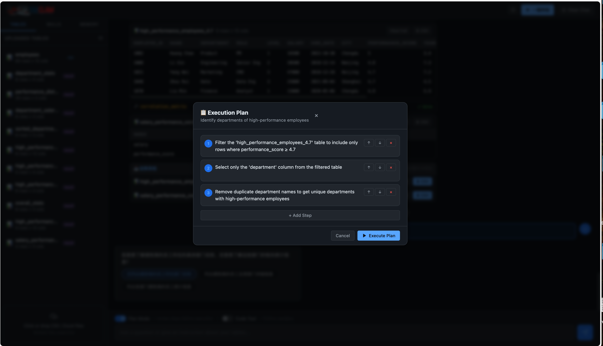
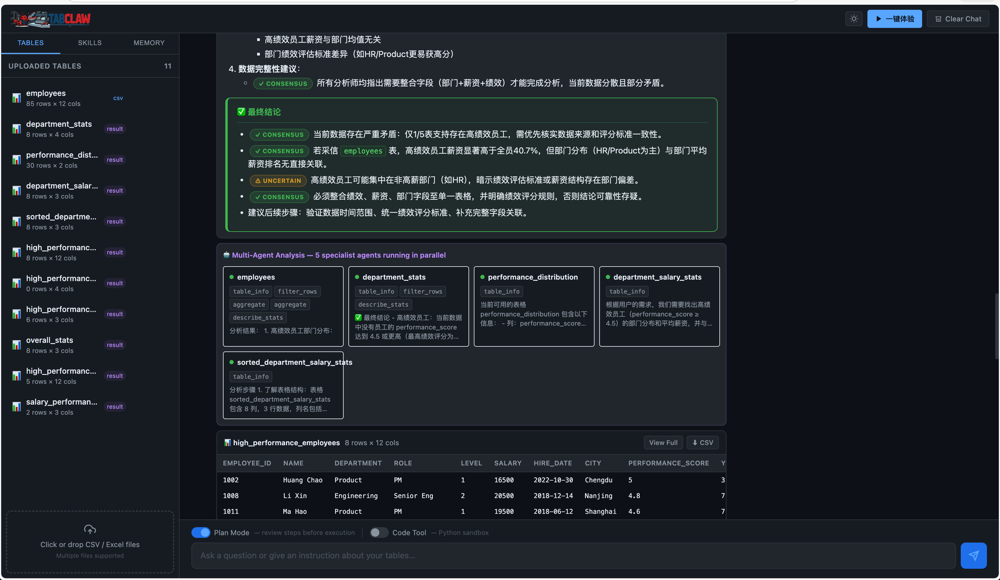
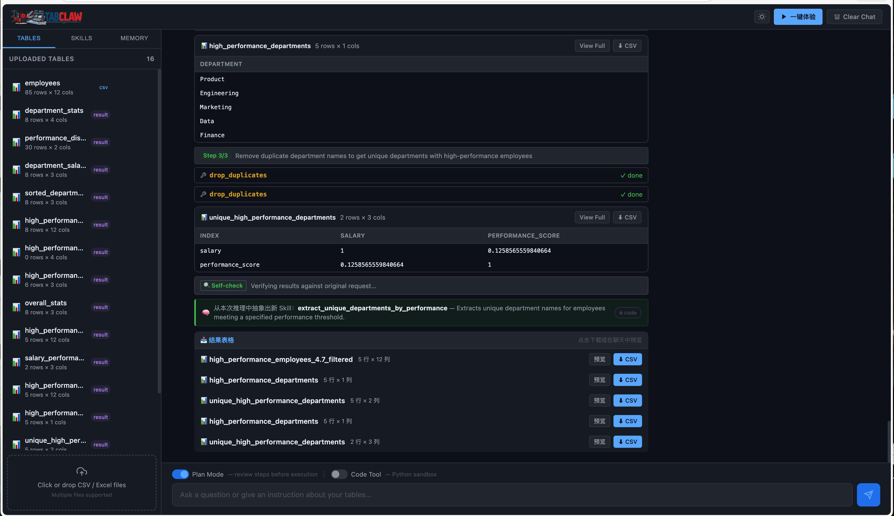
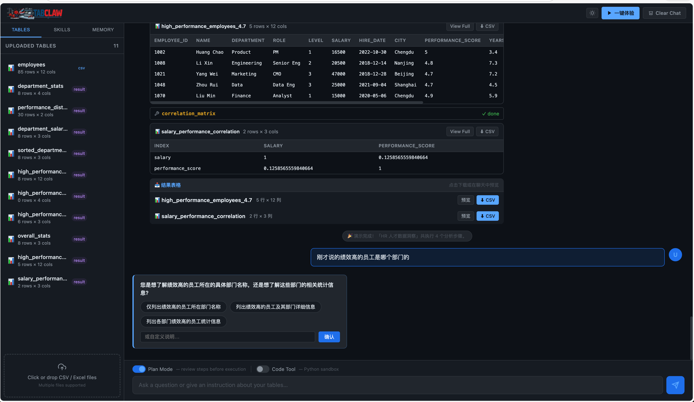
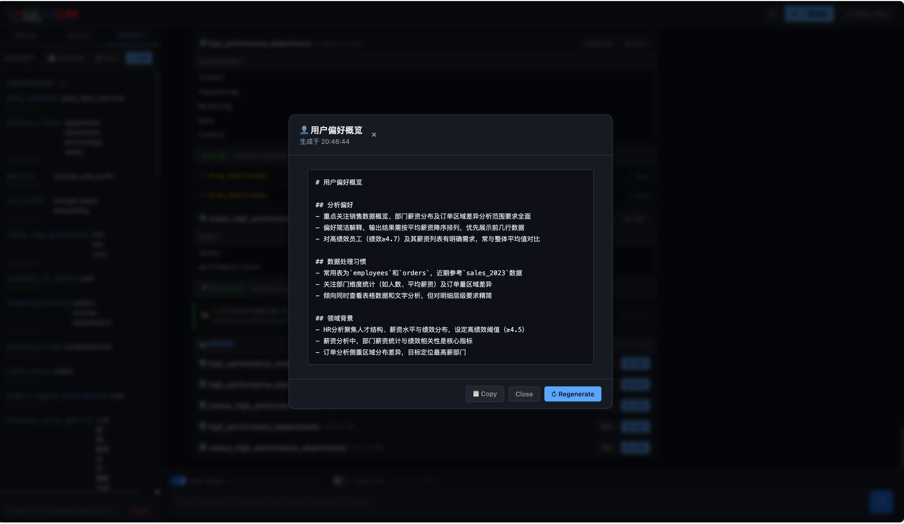

系统架构
TabClaw 的核心是一个 ReAct 流式循环：Thought → Action → Observation 反复迭代，直至任务完成。计划执行阶段通过上下文链接保证多步一致性。代码执行采用三层沙箱（AST 静态检查 → 受限 globals → 超时熔断），在安全性与灵活性之间取得平衡。

完整的技术细节——包括 asyncio 多 Agent 协调机制、技能蒸馏流水线的实现方式，以及三层沙箱的具体设计——请参阅完整文档的架构章节。
数据分析的门槛长期阻碍非技术用户充分挖掘表格数据的价值。TabClaw 以 LLM Agent 为核心引擎，将自然语言对话与结构化表格操作打通：用户只需描述目标，Agent 自动选择合适的工具（数值计算、统计分析、可视化等），制定并展示分步执行计划，获得用户确认后再执行，并在执行完成后进行自检。
当用户上传多张表时，TabClaw 为每张表各自派遣一个专属 Agent 并行运行，由聚合器综合各 Agent 的发现，并以 [CONSENSUS] / [UNCERTAIN] 标注结论的可信度。跨会话的持久记忆与自动技能蒸馏机制，使系统随使用时间的推移持续成长。
TabClaw 兼容任意 OpenAI 兼容端点（OpenAI、DeepSeek、SiliconFlow、Ollama 等），支持本地化部署。

执行前生成分步计划并展示给用户，支持重排、修改、追加步骤，确认后才执行，执行完成后自动自检。
多张表各自派遣专属 Agent 并行分析，聚合器综合所有发现并标注 [CONSENSUS] / [UNCERTAIN]。
完成非平凡任务（≥3 次工具调用）后，自动将交互过程蒸馏为可复用技能，下次遇到类似需求直接调用。
自动提取用户偏好与领域知识，注入后续会话。随时从侧边栏查看、编辑或清除记忆内容。
需求模糊时提供简洁的澄清选项再执行；需求明确时直接通过，无多余延迟，无静默错误假设。
支持以 Prompt 模板或 Python 代码模式自定义技能，结合自动蒸馏机制，逐步构建个人专属工具库。
执行前生成分步执行计划并展示给用户——可重排步骤顺序、修改描述、追加新步骤。确认后才真正运行，结束后自动自检，全程透明可控。

上传多张表并提出比较性问题，TabClaw 为每张表各自派遣一名专属分析 Agent 并行运行。聚合器综合所有结论，以 [CONSENSUS] 标注各方一致的发现，以 [UNCERTAIN] 标注存在分歧的地方。

完成非平凡任务（≥3 次工具调用）后，TabClaw 自动将本次交互模式蒸馏成一个可复用的自定义技能。下次遇到类似需求，直接调用该技能，无需重新推理，越用越快。

当请求存在多种合理解读时，TabClaw 暂停并给出一组简洁的澄清选项，选择后再执行。需求明确时则直接通过，不引入额外延迟，无静默错误假设。

TabClaw 自动提取你的分析偏好、常用指标与领域术语，在每次新会话开始前注入上下文。可随时从侧边栏查看、编辑或清除记忆内容，完全透明可控。

TabClaw 的核心是一个 ReAct 流式循环：Thought → Action → Observation 反复迭代，直至任务完成。计划执行阶段通过上下文链接保证多步一致性。代码执行采用三层沙箱（AST 静态检查 → 受限 globals → 超时熔断），在安全性与灵活性之间取得平衡。
完整的技术细节——包括 asyncio 多 Agent 协调机制、技能蒸馏流水线的实现方式，以及三层沙箱的具体设计——请参阅完整文档的架构章节。
克隆仓库、配置 API Key，运行即可：
浏览器打开 http://localhost:8000 即可开始使用。
支持的 LLM 提供商：任何 OpenAI 兼容端点均可接入，包括 OpenAI、DeepSeek、SiliconFlow、Ollama（完全本地）等。详见 Configuration 文档。
TabClaw 由中国科学技术大学认知智能全国重点实验室 AGI 组构建。
| 角色 | 成员 |
|---|---|
| 核心开发 | Shuo Yu · Daoyu Wang · Qingchuan Li · Xiaoyu Tao · Qingyang Mao · Yitong Zhou |
| 指导教师 | Mingyue Cheng · Qi Liu · Enhong Chen |